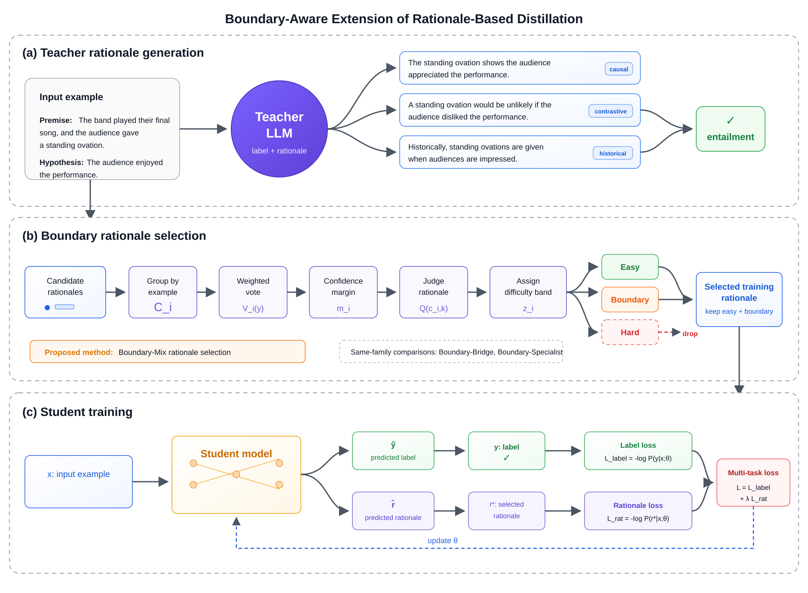
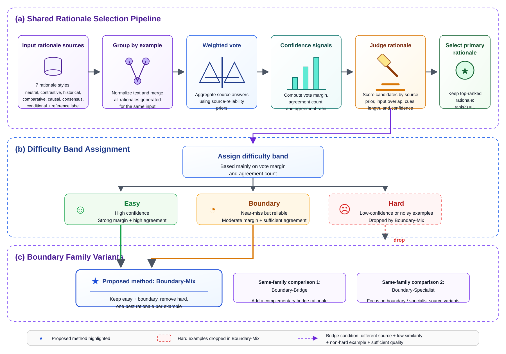

Methodology

3.1 Overview
The proposed methodology is built as an extension of the original rationale-based distillation framework. The original framework has two main steps. First, a teacher large language model receives an input example and generates both a task label and a natural-language rationale. Second, a smaller student model is trained with the task label and the rationale as auxiliary reasoning supervision. This design allows the student to learn not only the final prediction, but also the reasoning pattern that supports the prediction.
Figure 1 shows the complete training framework. Figure 1(a) describes teacher rationale generation, Figure 1(b) shows where the boundary-aware module is inserted, and Figure 1(c) shows student training. Figure 2 expands the internal structure of the boundary-aware module. Instead of sending all generated rationales directly into student training, we first organize them into candidate groups, estimate their agreement, identify whether the example is easy, boundary, or hard, and select the most suitable rationale for learning. Therefore, the proposed method does not change the teacher LLM, the student architecture, or the inference procedure. It changes the quality of the training supervision by filtering and selecting rationales before the student-training objective is applied.
3.2 Teacher Rationale Generation
Panel (a) in Figure 1 represents the teacher rationale generation stage. For textual entailment, each input example is represented as \(x_i = (p_i, h_i)\), where \(p_i\) is the premise and \(h_i\) is the hypothesis. The teacher LLM is prompted to infer the relationship between the two texts and produce a label from the task label set \(\mathcal{Y}\), together with a rationale explaining the prediction.
\(x_i\) is the \(i\)-th input example. \(p_i\) is the premise, \(h_i\) is the hypothesis, \(y_i\) is the target task label, and \(\mathcal{Y}\) is the complete label space.
The teacher is asked to generate several rationale styles for the same example. These include causal, contrastive, historical, conditional, neutral, consensus, and comparative rationales. The motivation is that different rationale styles expose different reasoning views. For example, a causal rationale may explain what evidence causes the entailment decision, while a contrastive rationale may explain why another label is less plausible. For each example, all generated rationales form a candidate set:
\(C_i\) is the candidate set for example \(x_i\). \(K\) is the number of generated rationale candidates for that example, and \(c_{i,k}\) is the \(k\)-th candidate.
Each candidate is defined by its rationale text, predicted label, and rationale source or type:
Here, \(r_{i,k}\) is the generated rationale, \(\hat{y}_{i,k}\) is the label predicted with that rationale, and \(s_{i,k}\) is the rationale type. At this point, the generated rationales are not treated as final training targets. They are treated as candidates that must pass the boundary-aware selection stage before being used for student supervision.
3.3 Boundary-Aware Rationale Selection
Figure 1(b) marks the proposed boundary-aware rationale selection stage in the full framework. Figure 2 gives the detailed view of this module. The purpose of this stage is to transform a noisy pool of generated rationales into a smaller set of rationales that are more suitable for student learning. The module follows three levels: a shared rationale selection pipeline in Figure 2(a), a difficulty-band assignment step in Figure 2(b), and same-family selection variants in Figure 2(c).

The first step is grouping. Candidate rationales are normalized and grouped by the same original input \(x_i\), so all rationales generated for the same premise-hypothesis pair are compared together. The second step is weighted label voting. For each possible label \(y\), the method sums the contribution of candidates that predict that label:
\(V_i(y)\) is the vote score for label \(y\) on example \(x_i\). \(w(s_{i,k})\) is the reliability weight of source \(s_{i,k}\). \(\mathbf{1}[\cdot]\) is an indicator function that returns 1 when candidate \(k\) predicts label \(y\), and 0 otherwise.
The source weight \(w(s_{i,k})\) is a source-reliability prior over rationale styles. It controls how strongly each rationale source contributes to the vote. The voted label is then selected by:
\(\hat{y}^{vote}_i\) is the group-level voted label for example \(x_i\). It is the label with the highest weighted vote among all labels in \(\mathcal{Y}\).
Confidence is measured by several signals. The main signal is the vote margin, defined as the distance between the strongest label vote and the second strongest label vote. We also use agreement count and agreement ratio to estimate how many candidates support the voted label:
\(m_i\) is the vote margin. The first term is the vote score of the winning label, and the second term is the strongest competing label score. A larger margin means stronger label agreement.
\(a_i\) is the agreement count, meaning the number of candidates that support the voted label. \(\rho_i\) is the agreement ratio, meaning the fraction of candidates that support the voted label.
These signals define the difficulty band. Easy examples have a strong margin and high agreement. Boundary examples are near-miss cases: they have moderate confidence but enough agreement to remain useful. Hard examples have low confidence or noisy agreement and are dropped by the proposed Boundary-Mix method.
\(z_i\) is the assigned difficulty band. \(\tau_m^{easy}\) and \(\tau_\rho^{easy}\) are thresholds for easy examples. \(\tau_m^{boundary}\) and \(\tau_a^{boundary}\) are minimum thresholds for retaining boundary examples. Examples that fail these conditions are treated as hard.
After assigning the difficulty band, the method judges each rationale candidate. A useful rationale should support the voted label, be grounded in the premise and hypothesis, explicitly connect the reasoning to the answer, and have an appropriate length for supervision. We combine these signals into a rationale quality score:
\(Q(c_{i,k})\) is the quality score of candidate \(c_{i,k}\). \(\alpha, \beta, \gamma, \delta,\) and \(\eta\) control the contribution of each scoring signal.
\(S_{label}\) checks whether the candidate label agrees with the voted label. \(S_{ground}\) checks whether the rationale is connected to the premise and hypothesis instead of introducing unsupported information. \(S_{answer}\) checks whether the rationale explicitly supports the final answer. \(S_{source}\) incorporates the rationale-type prior, and \(S_{brief}\) penalizes rationales that are too weak or too verbose for effective supervision.
3.4 Boundary-Mix and Same-Family Variants
Figure 2(c) summarizes the boundary-family variants. The main proposed method is Boundary-Mix. It follows the full selection process in Figure 2(a) and Figure 2(b): candidate rationale collection, grouping by example, weighted vote, confidence signal estimation, rationale judging, difficulty-band assignment, and final selection. Boundary-Mix keeps examples in the easy and boundary regions because they contain usable supervision. It removes hard examples because their generated rationales are too unstable.
Formally, Boundary-Mix selects the highest-scoring rationale for examples that are not hard:
\(c_i^*\) is the selected rationale candidate for example \(x_i\). It is the candidate with the highest quality score among candidates in \(C_i\), but only when the example is assigned to the easy or boundary band.
Hard examples are excluded from rationale-supervised training because their candidate rationales do not provide stable enough supervision.
| Variant | Selection rule | Purpose |
|---|---|---|
| Boundary-Mix | Selects the highest-scoring rationale from easy and boundary examples; removes hard examples. | Main proposed method. It balances rationale quality and training coverage. |
| Boundary-Bridge | Selects the main rationale and optionally adds a second complementary rationale with a different reasoning view. | Tests whether adding one diverse rationale improves learning beyond single-rationale selection. |
| Boundary-Specialist | Uses the same boundary pipeline but emphasizes stronger rationale sources or rationale types. | Supports analysis of source reliability and label-rationale compatibility. |
The same-family variants are useful for controlled comparison. Boundary-Bridge studies whether adding one complementary rationale can improve training. Boundary-Specialist studies whether stronger rationale sources or rationale types should be emphasized. Because these variants share the same upstream boundary pipeline, their comparison helps isolate the effect of the final selection rule.
3.5 Student Training with Selected Rationales
Figure 1(c) shows the student training stage. The student model is trained in a text-to-text framework, where the same input \(x_i\) can be paired with different task prefixes. With the label prefix, the model learns to generate the task label. With the rationale prefix, the model learns to generate the selected rationale. This makes rationale learning an auxiliary task instead of an additional inference-time input.
The label prediction loss is defined as the average cross-entropy between the student prediction and the target label:
\(N\) is the number of training examples. \(f_\theta\) is the student model with parameters \(\theta\). \([label]\) is the task prefix that asks the model to generate the label. \(\ell\) is token-level cross-entropy loss.
The rationale generation loss is computed in the same way, but the target is the selected rationale \(r_i^*\) produced by the boundary-aware selection stage:
\([rationale]\) is the rationale prefix that asks the student to generate a rationale. \(r_i^*\) is the selected rationale from Boundary-Mix.
The complete multi-task objective balances the two losses:
\(\lambda\) controls the trade-off between label prediction and rationale generation. When \(\lambda\) is larger, training emphasizes label prediction; when it is smaller, training gives more weight to rationale generation.
Compared with direct rationale usage, the selected rationale is used as a training target, not as an input required at test time.
This training setup preserves the deployment advantage of the original distillation framework. During inference, the teacher LLM, candidate rationales, and boundary selector are not used. The trained student receives only the input example and predicts the task label directly. Therefore, the boundary-aware module improves the training data while keeping the student architecture and inference process unchanged.